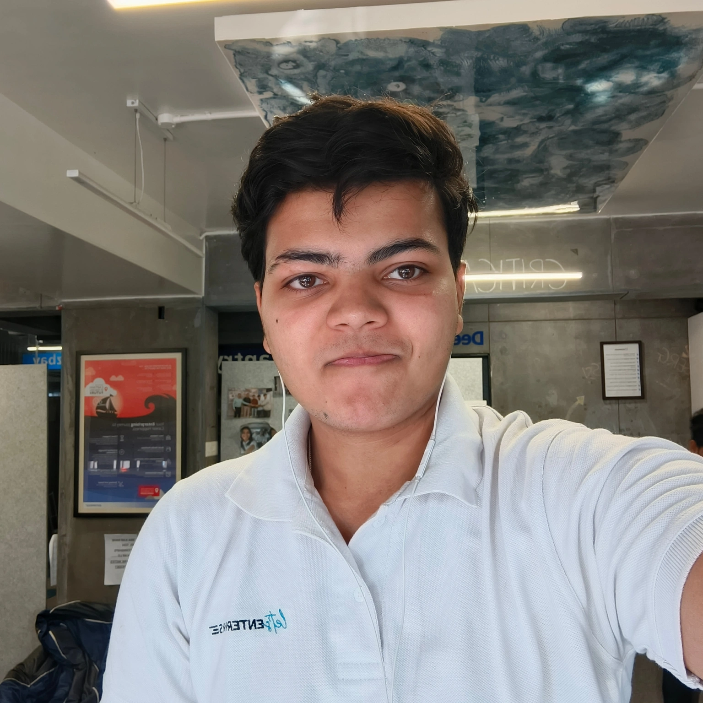

00 · Profile
Hi, I’m
Shardul.
I learn fastest when the problem is real and the room is moving.
I am curious, direct, and hard to keep at the edge of a problem. I ask until I understand what is actually happening, then look for the next useful thing I can own.
Business student · operator in training
